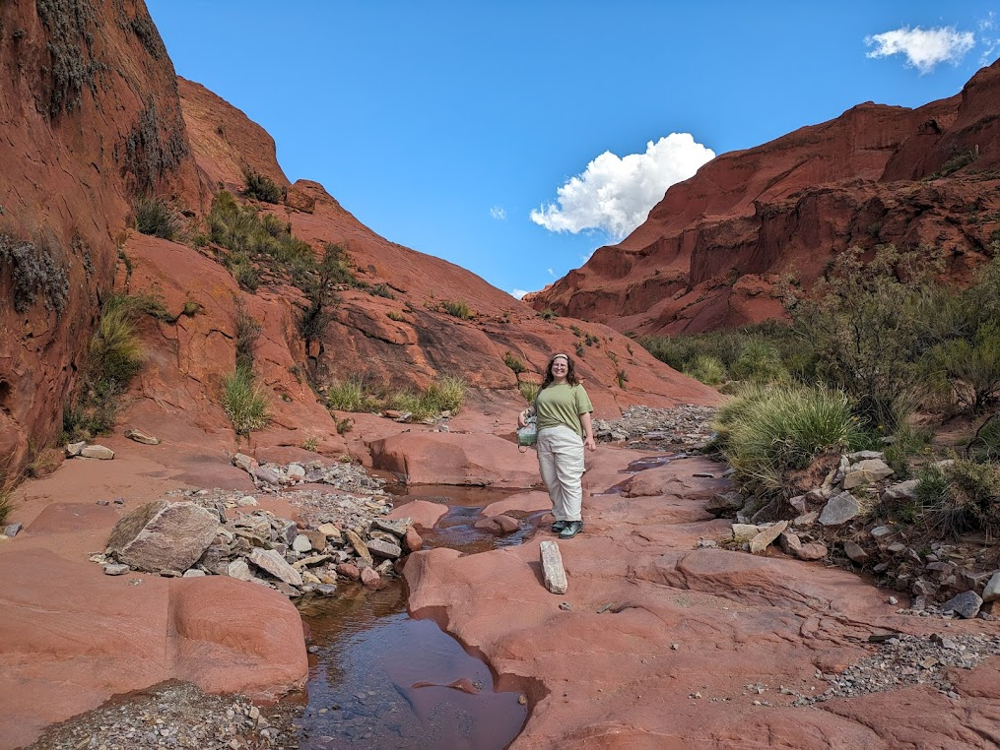
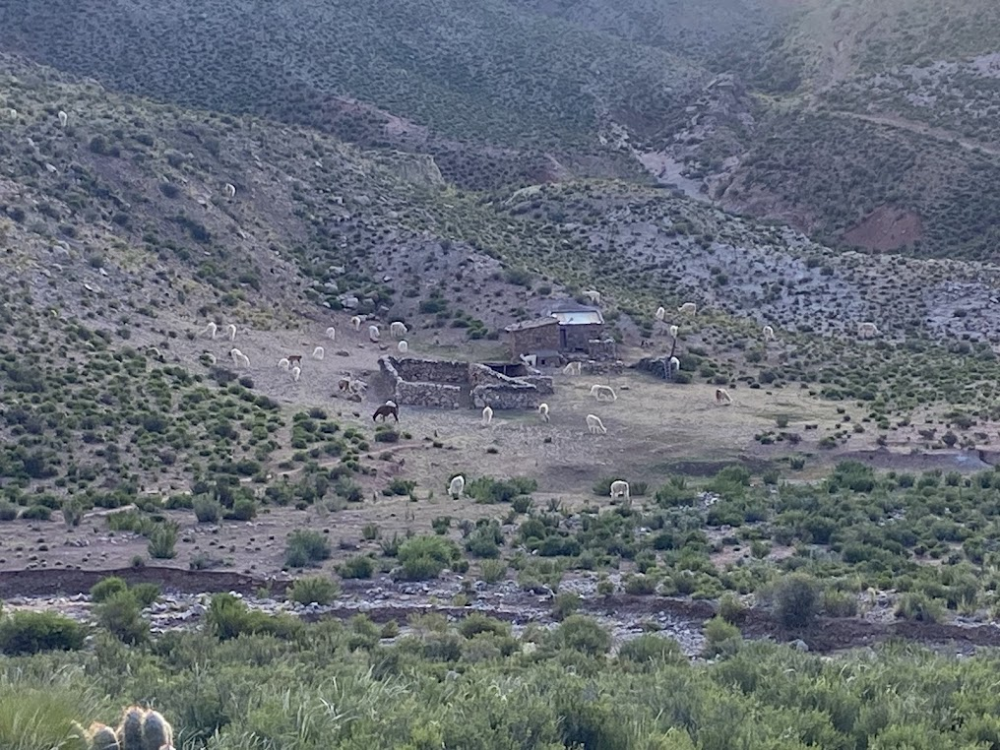

Start of Trail

On the Walk

Llama Shepherd
Our first leg of the journey brought us to to the Jujuy region, with the cities/towns Humahuaca, San Salvador de Jujuy, Tilcara, and Purmamarca. Huamahuaca had the highest altitude, at about 3,500 meters. Taking a slow ascent is a must if you want to avoid altitude sickness. The temperature high up was very dry, a sharp contrast to San Salvador Jujuy's jungle like humidity. North West Argentina is known for its micro climates, and it soon became very apparent to us why!
The biggest city of all the regions, Humahuaca, is a UNESCO world heritage site. Tilcara and Purmamarca are beautiful quiet little towns, with a vibrant art scene and deep rich culture thousands of years old. The locals are very much in touch with their Incan and Humahuacan routes. The area is surrounded by beautiful mountains colored by mineral deposits.
This was my favorite part of the trip. My friend and I took a 45 minute bus ride to Inca Cueva, or Incan Cave. After a one hour hike at 4,0000 meter altitude(! Tiring!), we finally got to the prize: cave drawings of llamas.
A historian was stationed right at the entrance of the cave, and he went through the history of the cave and its drawings. It was very interesting!